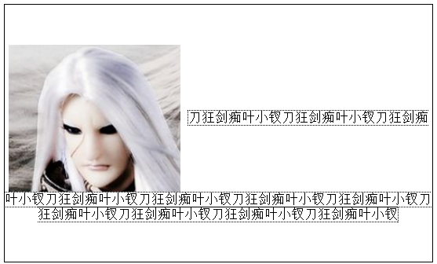

前言
昨天我们整理了14到js的题，今天我们再来整理14到CSS相关的题目，昨天整理时候时间有点晚了我便有点心浮气躁，里面的一些题需要再次解答，好了看看今天有些什么吧。
PS：我这里挑一点来做就好了，各位也可以作答
题目一览
1、<img>标签上title属性与alt属性的区别是什么？
2、分别写出以下几个HTML标签：文字加粗、下标、居中、字体
3、写出一个文本输入框，属性为只读，最大输入字符为20个
4、CSS左边固定，右边可变的布局实现方法；要求在源码顺序中左边必须在前。
5、图片和文字一起如何通过css实现居中
6、请简述一下CSS中的样式继承和CSS的选择器
7、请简述一个各个选择器之间的优先级
8、在同等优先级的情况下如何选择样式
9、盒子模型，请简述一下盒子模型
10、如何使一个DIV的背景图像距这个DIV的顶部10像素，左边15像素，且不重复
11、如何增加某一个链接的可点击面积，而下划线仍然与链接一样长？
12、一个元素的上边框为红色，其他边框黑色，里面文字的颜色是蓝色
13、打开（隐藏）、关闭（显示）一个对象。Style的display以及visibility的参数是什么？
14、用css和div实现3列或2列的页面布局，并说明与table布局相比有哪些优缺点
15、定宽网页两列内容布局，试写出你所知道的几种布局代码
第一题，img title与alt
title是用于鼠标划上时候显示的提示信息，而我们的图片总汇有原因不能现在，这个时候alt便会替代文字显示，而且alt对于seo十分友好，所以我们所有的图片必须加上alt，这样浏览器就知道他是干什么的了。
第二题，加粗，居中，下划线标签
<strong></strong>
center></center>
<u></u>
这道题感觉意义不大，以为以上几个标签除了strong，其它我没有用过，他可能会到语义化相关然后问CSS怎么用吧？
第三题，文本框属性
<input type="text" maxlength="20" readonly="readonly" />
我突然迷糊了，这些题虽然我不大答得上，但是不带这么问的，因为分分钟可以找到答案的问题。。。虽说我们不应该依赖网络，但是......
第四题，布局的问题
没有理解到想要问什么，按我的理解这个题考察以下知识：
① 内容优先
② 布局知识
第五题，图片与文字一起居中
好了，这道题是这么久出现的最好的一道题，我们先来看一个有趣的实验：
1 <div style=" width: 500px; height: 300px; border: 1px solid black; display: table-cell; vertical-align: middle; text-align: center; "> 2 <img src="1.png" style=" vertical-align: middle;" alt="叶小钗头像" /> 3 <span style=" vertical-align: middle; border: 1px dotted black ">刀狂剑痴叶小钗刀狂剑痴叶小钗刀狂剑痴叶小钗刀狂剑痴
叶小钗刀狂剑痴叶小钗刀狂剑痴叶小钗刀狂剑痴叶小钗刀狂剑痴叶小钗刀狂剑痴叶小钗刀狂剑痴叶小钗刀狂剑痴叶小钗</span> 4 </div>

事实上我们以上的做能保证我们的图片与文字居中了，虽然在IE下需要做特殊处理（文字大小控制），但是我们似乎感觉这不是我们想要的东西么（主要是文字换行的比较诡异）？
这里又涉及到了我们前面介绍的line-height的知识了哦，我们先不管这些，只是看看垂直居中这个：
我这里介绍一个国内淘宝干的事情：
1 div { display: table-cell; width: 200px; height: 200px; font-size: 118px;
border: 1px solid black; text-align: center; vertical-align: middle; } 2 img { vertical-align: middle; }
这个能很好的实现图片居中的功能，现在我们来看看其中文字那块问题吧：
经过我们前面的学习，我们知道一行的高度来源于line boxes，而line boxes高度来源于inline boxes，而第一行的高度由图片决定，所以第一个行高就比较高了，不信？我们来做过例子：
1 <div style=" width: 500px; height: 300px; border: 1px solid black;
display: table-cell; vertical-align: middle; text-align: center; "> 2 <img src="1.png" style=" vertical-align: middle;" alt="叶小钗头像" /> 3 <span style=" vertical-align: middle; border: 1px dotted black ">
刀狂剑痴叶小钗刀狂剑痴叶小钗刀狂剑痴叶小钗刀狂剑痴叶小钗刀狂剑痴叶小钗
<em style=" line-height: 40px; color: Red; ">不信？</em>
刀狂剑痴叶小钗刀狂剑痴叶小钗刀狂剑痴叶小钗刀狂剑痴叶小钗刀狂剑痴叶小钗刀狂剑痴叶小钗</span> 4 </div>
请看此处我们不信所看的事情，其实和img标签差不多了。具体垂直居中的事情各位还要自己私下研究才行。
第十题，背景相关
10、如何使一个DIV的背景图像距这个DIV的顶部10像素，左边15像素，且不重复
PS：我怎么觉得这些题有点坑爹的嫌疑。。。虽说没有编辑器我可能打不好，我也不推荐这么干：
background:url("yexiaochai.gif") no-repeat 15px 10px ;
结语
感觉今天这套题一般，各位看着玩吧。